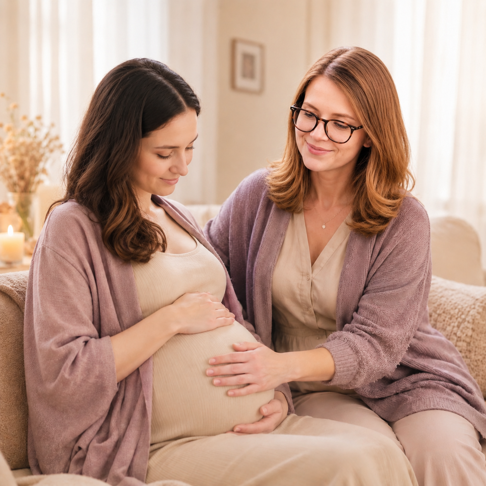
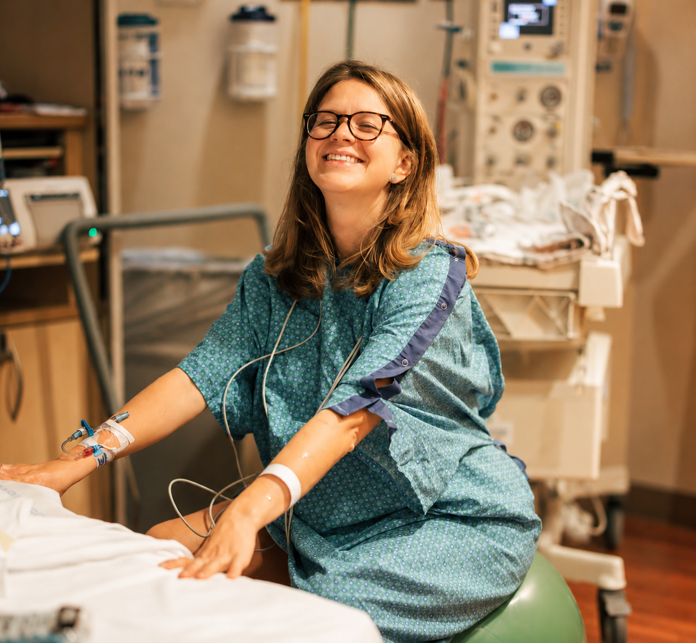
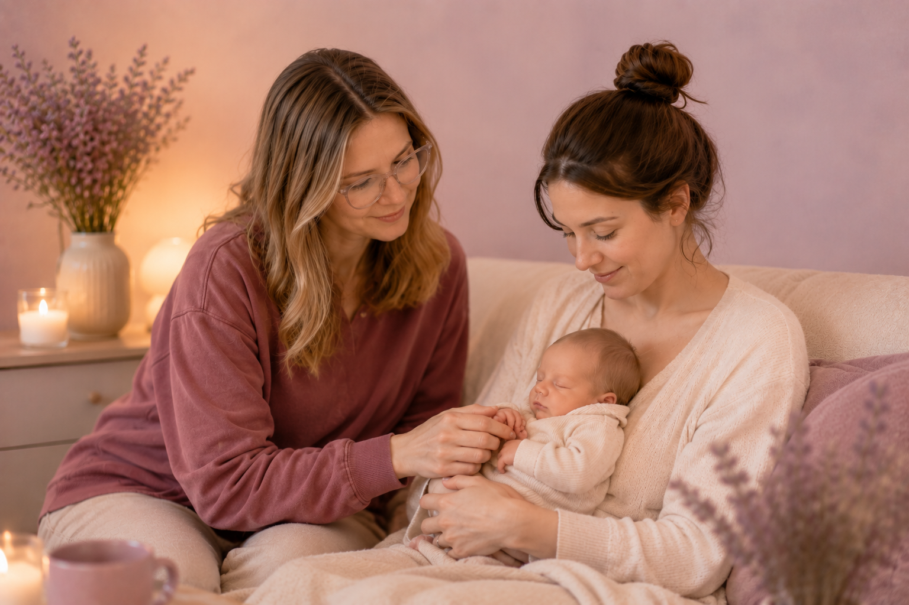
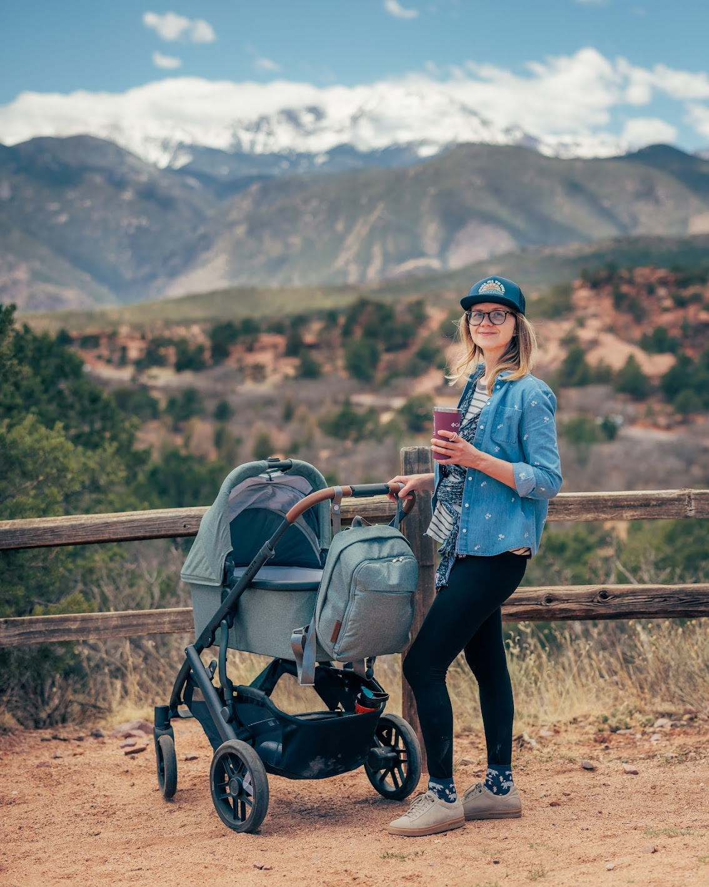
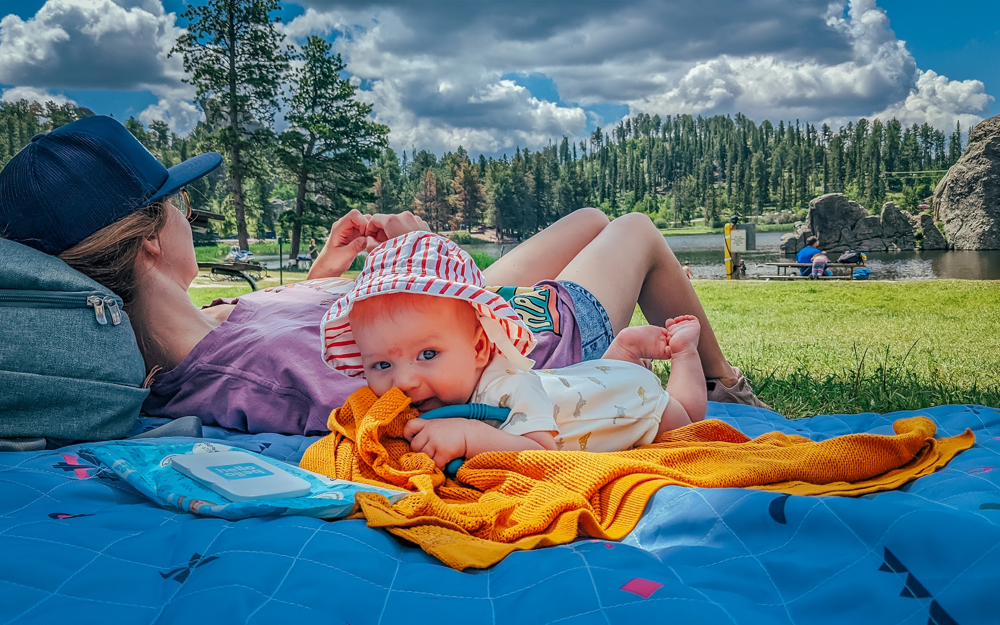
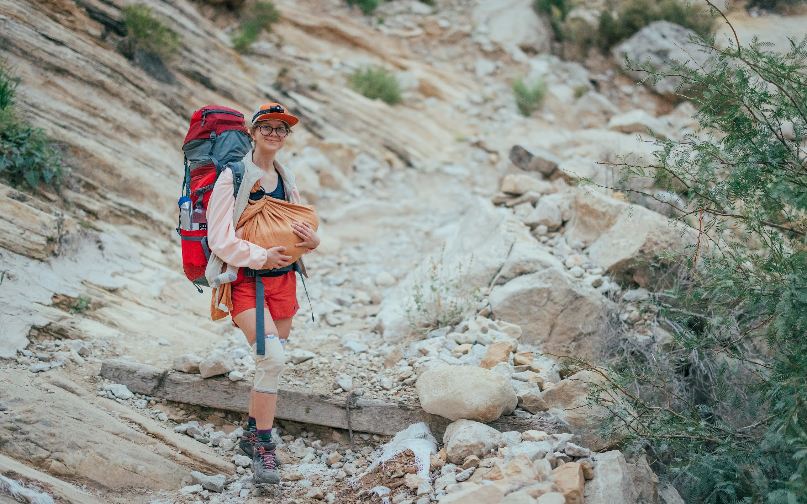
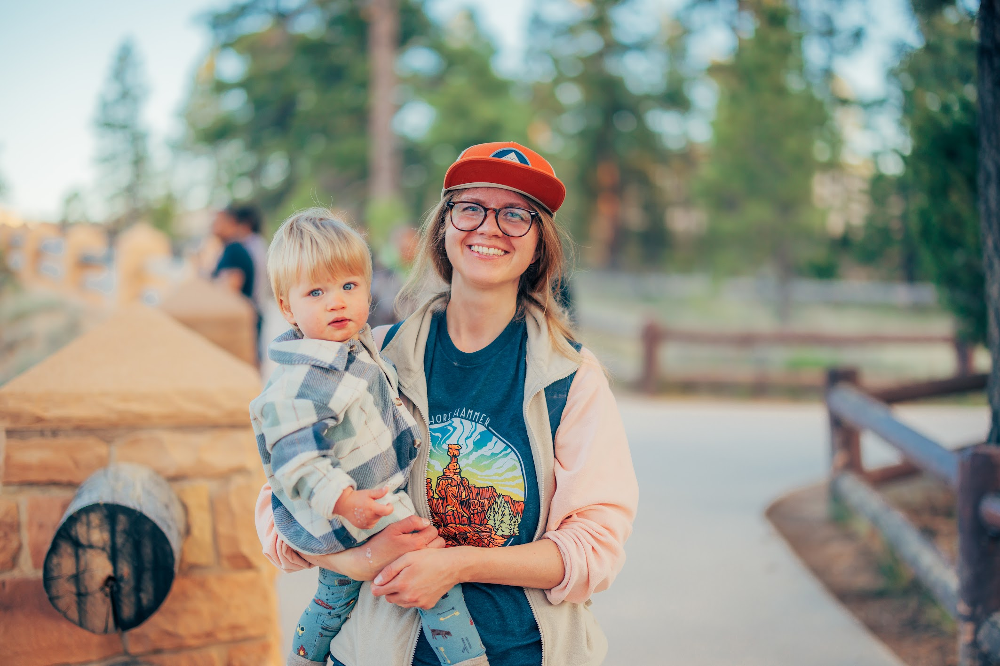

Personalised Birth Support
Calm preparation, emotional support, practical tools, and grounded advocacy for the kind of birth environment that feels right for you.

Welcome to
Compassionate support for a gentle path into motherhood

The name Ula comes from the Manchu phrase Sahaliyan Ula ("Black River"), the original name of the Amur River in the Russian Far East, where I was born and raised. Like a river, pregnancy, birth, and early parenthood are powerful journeys of change. They ask us to move with uncertainty, trust our inner wisdom, and find support along the way. Now living in Colorado, I bring together my roots, my passion for supporting families, and my work as a doula to offer compassionate, evidence-based care through pregnancy, birth, and the postpartum period.
My role is to help you feel informed, supported, and deeply cared for during life's most transformative transitions, so that you never have to walk this path alone.
Calm preparation, emotional support, practical tools, and grounded advocacy for the kind of birth environment that feels right for you.

Gentle support as your home, body, and relationships settle into a new rhythm after birth, with space for rest, questions, and nourishment.

I would be honored to meet you, share a cup of tea, and learn more about your hopes and needs as you prepare for this chapter of life. Finding the right doula is important, and our conversation is a chance to see whether we're a good fit.
Please reach out if you'd like to talk more about your options

Hi, I'm Eugenia
I am a mother of two boys, and the journey through pregnancy, birth, and motherhood changed the course of my life in ways I never expected.
Becoming a mother was more than a new role, it was a profound transformation. It taught me about strength, vulnerability, trust, and the incredible wisdom that lives within women. Through my own experience, I discovered how important it is to feel supported, informed, and truly cared for during this life-changing transition. That experience inspired me to become a doula. Today, I support women as they move through pregnancy, birth, and the early days of motherhood. I believe this journey should not be walked alone. Every woman deserves to feel seen, heard, and held as she finds her own path into motherhood. My role is not to tell you how your birth should look. Instead, I offer knowledge, emotional support, encouragement, and a calm presence so that you can make choices that feel right for you and your family. I believe birth can be a powerful, joyful, and deeply meaningful experience. My hope is to help you approach this chapter with confidence, love, and trust in yourself as you welcome your baby and step into motherhood.
"To change the world, we must first change the way the babies are being born"
Michel Odent
I am deeply moved by the natural intelligence of women's bodies and the old rhythms that still live inside pregnancy, birth, and mothering. A positive birth experience is not about perfection; it is about feeling respected, informed, and connected to your own strength.
As your doula, I bring continuous emotional support, grounded information, gentle advocacy, and simple holistic tools such as breath, movement, affirmations, aromatherapy, grounding practices, and rest rituals. My aim is to help you feel safe enough to soften, strong enough to speak, and steady enough to meet each moment.
Outside of supporting growing families, you'll usually find me exploring the outdoors. I love hiking, camping, and spending time in nature, it helps me slow down and recharge. At home, I enjoy cross-stitching, tending to my little garden, and growing tomatoes and fresh herbs. These simple moments remind me of the beauty of nurturing, patience, and growth, the same values I bring to every family I have the privilege of supporting





I love slow mornings, chamomile tea, and the feeling of finding a quiet path through the trees
I collect small rituals: lighting a candle before planning, gathering herbs, and marking seasonal changes at home.
Movement helps me think, so many ideas arrive while walking, cycling, or wandering somewhere green.
It would be an honor to walk beside you through pregnancy, birth, and the first tender time with your baby. This package is shaped to help you feel prepared, informed, protected, and cared for as your birth story unfolds.
For families preparing for physiological birth, induction, or caesarean birth
Every birth unfolds in its own way. Whether you are planning a natural birth, preparing for a caesarean, or simply holding openness around how your baby may arrive, this package offers continuous support so you can feel informed, steady, cared for, and deeply supported through the transition into parenthood
Ongoing support by phone, text, and email through pregnancy.
On-call support from 14 days before your due date until your baby is born.
Birth attendance with nurturing, continuous support through labor, birth, and the first hours with your newborn.
Two follow-up sessions for emotional reflection, practical guidance, and space to honor your birth story.
Six weeks of postnatal support by phone and email.
A calm, connected approach to preparing for birth from wherever you are
Four sessions during pregnancy, usually one hour each
What’s included: